Guardería de día
Para los días de trabajo largos. De 8:00 a 19:00.
22 € / día
- Paseo de la mañana y de la tarde
- Juego en grupo por tamaños
- Siesta en su cama
Residencia y guardería canina
Residencia y guardería canina con plazas limitadas. Una casa de campo con prado, siestas al sol y alguien que lo conoce por su nombre.
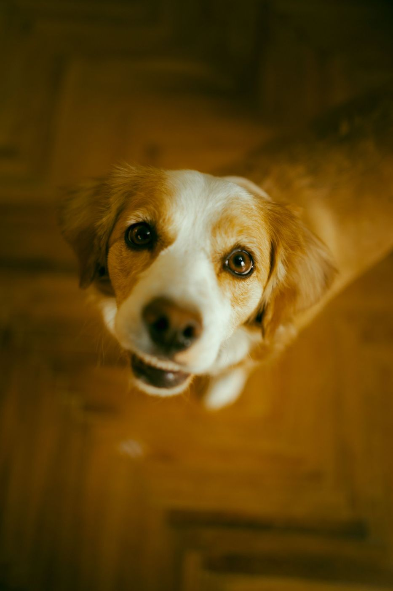
3.000 m² de prado vallado
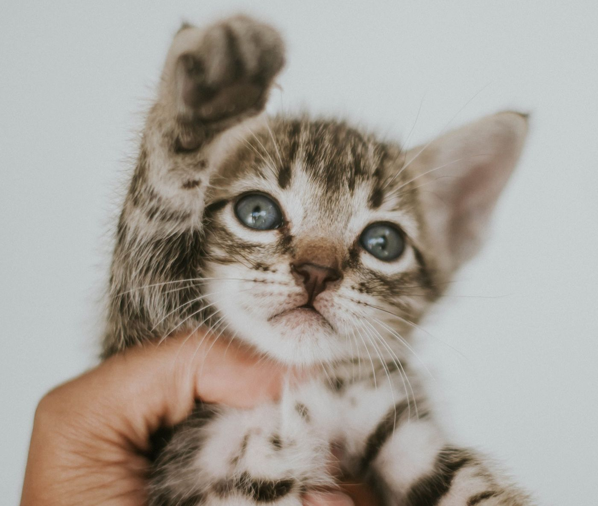
La casa
Pocos perros, mucho espacio y una rutina tranquila. Así vuelven a casa descansados, no agotados.
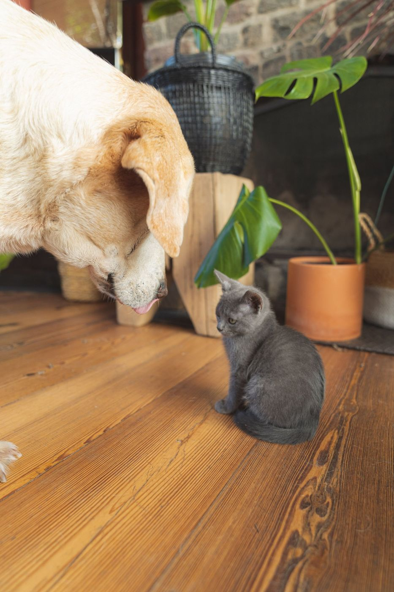
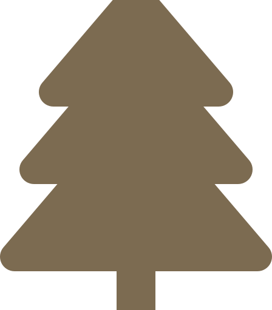
Jardín vallado con árboles, zonas de sombra y caseta para los días de lluvia.
Como máximo 12 perros, agrupados por tamaño y energía. Nadie se pierde entre la multitud.
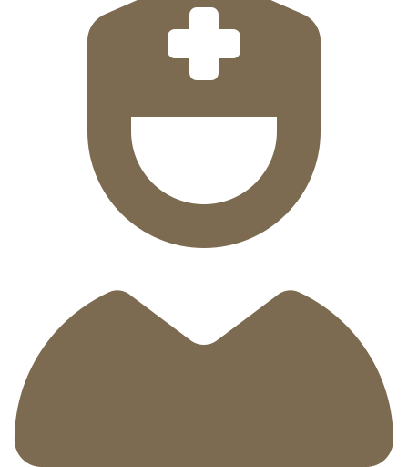
Una cuidadora duerme en la residencia. Por la noche también hay quien escuche.
Fotos y un mensaje cada tarde para que disfrutes de tus vacaciones sin preocuparte.
«Lo tratamos como trataríamos al nuestro: con paciencia, paseos largos y su manta de casa.»
Un día en el prado
Horarios fijos, paseos de verdad y siestas sin prisas. Los perros se relajan cuando saben qué viene después.
Primera vuelta por el camino de los olivos, con calma y sin correas en el prado.
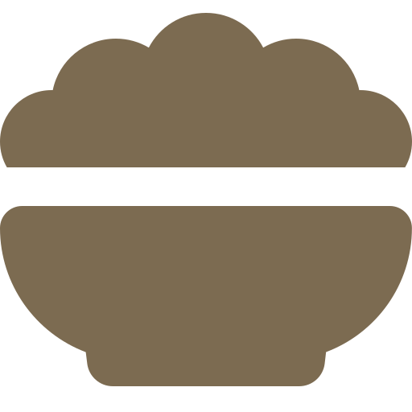
Con su propio pienso y en su cuenco, para que no cambie nada de su dieta.
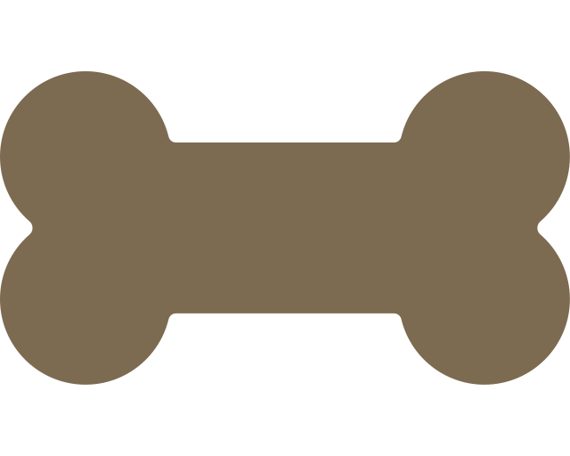
Por tamaños y caracteres, siempre con una cuidadora en el prado.
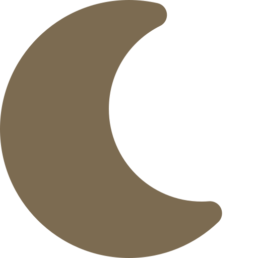
Camas mullidas y música suave. Las horas más tranquilas de la casa.
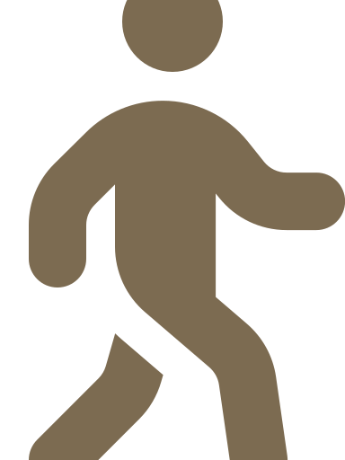
La hora favorita de todos. Después, cepillado y mimos.
Luces bajas y su manta de casa. Última vuelta y buenas noches.
Cada tarde, en tu móvil
Prado Sereno · 18:52 Rocky ha corrido con Luna y ya está cepillado. Te mandamos el vídeo del paseo.
Tú · 18:54 ¡Qué alegría verlo así! Gracias.
Tarifas
IVA incluido. La primera visita de prueba es gratis y sin compromiso.
Para los días de trabajo largos. De 8:00 a 19:00.
22 € / día
La más pedida
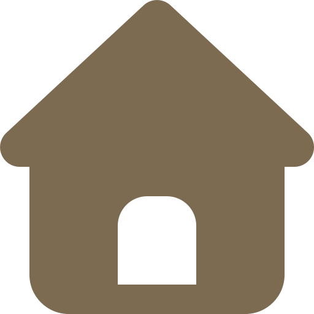
Vacaciones, puentes y viajes. Tú descansas y él también.
34 € / noche
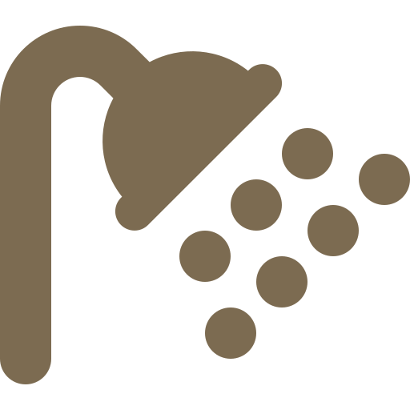
Para volver a casa limpio, cepillado y con olor a campo.
20 € / sesión
Familias
No tienen maldad ni prisa: solo ganas de jugar y de que alguien les quiera. Nuestro trabajo es cuidar esa inocencia.
4,9 de media en 320 opiniones
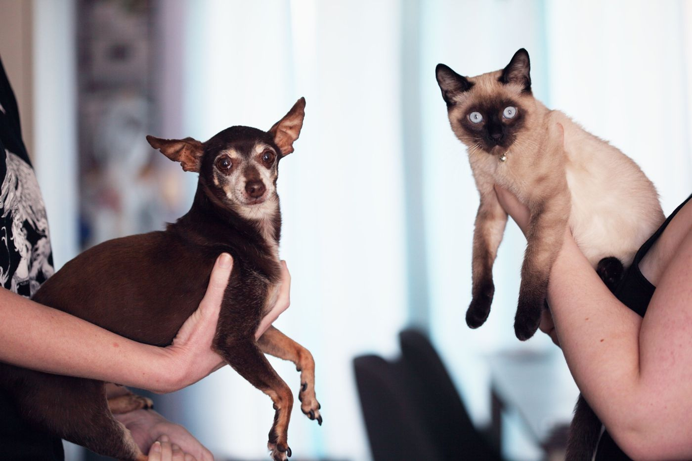
«Lola es muy miedosa y aquí la entendieron desde el primer día. Volvió tranquila y hasta más cariñosa con el gato.»
«Lo mejor son los mensajes de cada tarde. Me fui de viaje sin ese nudo en el estómago de siempre.»
«Lo llevo a la guardería dos días por semana. Llega a casa cansado, limpio y feliz. No se puede pedir más.»
Reservar
Trabajamos con plazas limitadas para que cada perro tenga su espacio. Cuéntanos las fechas y te confirmamos en menos de 24 horas.
Visita de prueba gratis Unas horas en el prado para conocernos.
Su ficha Comida, manías, medicación y lo que más le gusta.
¡Vacaciones! Tú te vas tranquilo y él se queda en buenas manos.